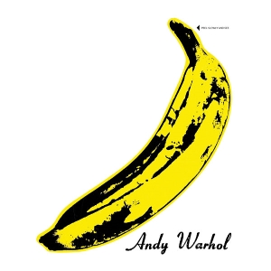

The Velvet Underground and Nico's 1967 self-titled debut album, The Velvet Underground & Nico, is one of the most influential albums in rock music. Produced by Andy Warhol, the album combines distorted guitars, experimental sounds, and Nico's distinctive deep vocals to create a dark and unusual atmosphere. Songs such as "Heroin" and "Venus in Furs" explore controversial subjects that were rarely discussed so openly in popular music at the time. Although the album was not commercially successful when it was released, its raw and experimental style later became hugely influential on punk, alternative rock, and indie music. The famous banana artwork and unconventional sound also helped establish the album as an important piece of both music and art history.